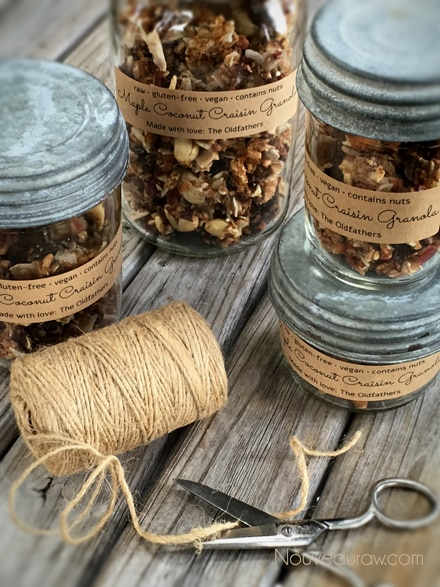
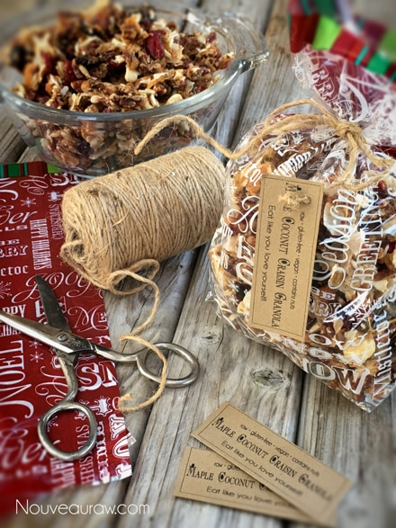

Maple Coconut Craisin Granola
Tonight I had a helper in the kitchen… my lovely mother. We have been working in the kitchen for the past two days making Christmas gifts for our friends. What is happening is that she is spoiling me! Every time I turn around the dishes are washed.
I am so not complaining, but I am going to really notice her absence when she goes back home. Well, not just because of that reason alone but you have to admit that such a thing would greatly spoil a person. One of the items that I wanted to make tonight for a few girlfriends was the Maple Raising Granola.
This afternoon, I started the nuts soaking, so those were all ready for us. I started coring the apples, grabbed for the date paste that I HAD in the fridge, and realized that I had used it all up yesterday. No problem, I will soak some more and make another batch of date paste. Doh! I am out of dates. Thus, raisin paste was born. No problem, it’s under control. I turn to grab some oranges to zest them…I am out of oranges!
Fine, I will just zest some lemons…no lemons?? Wait, there are some out of the tree in the backyard. Shew! That was when I realized that I was just going to have to recreate the original recipe and use what I had on hand. The end result… pure bliss! It turned out so yummy! I had a hard time keeping mom out of the batter. I packaged the granola in some jar containers and to really personalize it I made labels for them. It brings me so much joy to prepare food for others!
- 3 apples cored and chopped, organic
- 1 1/2 cups raisins, rehydrated
- 1/2 cup maple syrup
- 2 Tbsp lemon juice
- 2 Tbsp lemon zest
- 1 Tbsp vanilla extract
Dry ingredients:
Preparation:
- A little prep is needed in the soaking department. Soak each nut and seed as indicated in the links above. Also, rehydrate the raisins by soaking them in enough warm water to cover them. These only need to be soaked for roughly 15 minutes. This is just for the ease of blending.
- In a food processor, place the fresh apples, raisins, maple syrup, lemon juice, lemon zest, and vanilla, and 1/4 cup of the sunflower seeds. Process until completely smooth.
- Transfer the mixture to a large mixing bowl.
- Add the remaining 1/4 cup of sunflower seeds, nuts, cranberries, coconut, cinnamon, and salt to the food processor.
- Coarsely chop the nuts and seeds in a few quick pulses.
- Add them to the bowl with the apple mixture and mix well.
- Spread mixture out on the teflex dehydrator sheets.
- Dehydrate at 145 degrees for 1 hour, reduce temp to 115 degrees (F) for an additional 10-16 hours.
- The dry time will always vary, based on your climate, humidity, the make/model of your dehydrator, and how full it is.
- Store in sealed glass containers on the counter for 1-2 weeks and in the freezer for up to 3 months.
The Institute of Culinary Ingredients:
- To learn more about maple syrup by clicking (here).
- Why do I specify Ceylon cinnamon? Click (here) to learn why.
- What is Himalayan pink salt and does it really matter? Click (here) to read more about it.
Culinary Explanations:
- Why do I start the dehydrator at 145 degrees (F)? Click (here) to learn the reason behind this.
- When working with fresh ingredients it is important to taste test as you build a recipe. Learn why (here).
- Don’t own a dehydrator? Learn how to use your oven (here). I do however truly believe that it is a worthwhile investment. Click (here) to learn what I use.

Granolas make wonderful everyday gifts…

and are great for the Holidays!

© AmieSue.com